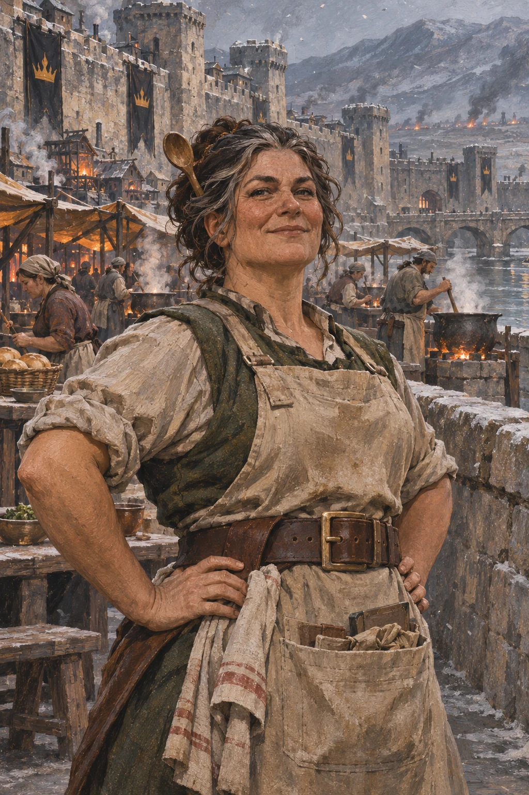

Услышать пощаду маршала, понять, о каком городе она, решить судьбу беглого обозника и заставить замолчать Жаровню.
Харвен ОрстИльвара ДаргетБорук Файн

Мейра Рунц
Повороты сюжета в этот вечер
Посеять сегодня
Пощада для половины города. Глашатай на вопрос со стены, весь ли город будет сохранён, отвечает: «Город, как он записан в пощаде», — и перечня у него нет.
Пощада для половины города. Беглый обозник Борук показывает приказ обозу: бирки нарезаны на триста семей, телега на две семьи, уход только по пропуску.
Пощада для половины города. Утром на створе Северных ворот кто-то пишет мелом: «Город — это кто?»
Утро без свиста: впервые за осаду катапульты молчат, и тишина звенит в ушах сильнее камней. Внизу серые знамёна с молотом опущены к земле. По склону к Северным воротам идёт один человек под белым флагом, со свитком в руке, неторопливо, как на ярмарку, и встаёт у арки — там, где его услышат все башни. На верхних улицах одна за другой открываются ставни: люди выглядывают, кто-то уже машет белой тряпкой, кто-то кричит ему не верить. В Рабочих дворах ставни закрыты, и на улицу оттуда никто не выходит. Над Нижним рынком поднимается пар от котлов с похлёбкой, пахнет луком и дымом. Над Коронным двором кто-то бьёт в било, созывая защитников, и звук расходится по всем пяти участкам. Ветер сдувает золу с зубцов. Глашатай поднимает свиток и набирает воздуху.
Подготовка и роли
Правила вечера: катапульты, «Вылазка к Жаровне», ночь 2 («Порядок ночи»). Цели ночи 2: Вдова — ВС, Ворчун — РД, Жаровня — КД, штурм — РН; на 8 игроков второй штурм — на РД. Жаровня: рама сбита в бою — молчит до конца кампании и в битве; мирно (Борук под полотнищем Оллира или Убеждение Сл 15) — молчит ночи 2 и 3; вылазка проиграна по цели — СВ −1 этой ночью; не ходили — бьёт. Не вернувшийся к концу раунда 6 ночью 2 «за стеной». Слово Борука возможно, только если в сц. 2 ему обещали убежище. У глашатая нет перечня, и он его не знает; до падения первой стены полного текста в городе нет ни у кого. Белые тряпки — образ, не механика: знамёна двигают только залп, штурм, починка и отвод. Борук не знает расположения войск — военных сведений ему не давать.
Оллир Пень: под его белым полотнищем Борук идёт к расчёту Жаровни — мирная вылазка без броска.
Радея Сажень: видит мозоли возчика на ладонях Борука — он не солдат и не лжёт; решает, найдётся ли беглецу место.
Тарна Брик: у вылазной калитки держит гвардейцев или сбивает раму Жаровни, пока Харвен считает до шести.
Если за столом Нель Тор или Ирса Медь: Нель запоминает, что и кому обещал глашатай; Ирса считает горшки Жаровни. Ключевых путей у них нет.
Сцена 1 · 40 минут
Глашатай у арки
Голос у него поставленный, ярмарочный, и каждое слово долетает до последнего зубца: «Слушай, Рудный Венец! Маршал, милостью своей, обещает: город будет сохранён!» Кричит он не торопясь, давая эху вернуться от башен. Кафтан на нём серый и чистый, на сапогах ни пятнышка золы, а свиток в руке короткий, в одну ладонь. На надвратной башне рядом с вами стоит Ильвара Даргет, чуть поодаль Харвен Орст сжимает свою дощечку так, что белеют пальцы. По обычаю войны условия кричат у арки, а бумагу к подписи приносят потом. Ильвара, не сводя глаз с поля, говорит вполголоса: «Запишите. Слово в слово».
Арка Северных ворот, зола на зубцах. Глашатай под белым флагом кричит пощаду; Ильвара Даргет велит записать слово в слово — ведущий кладёт раздатку «Пощада, как её кричал глашатай». С верхних улиц машут белыми тряпками, Рабочие дворы молчат. Харвен Орст сжимает дощечку: «Пусть кричит. Пока кричит, Вдова молчит». Кто-то спрашивает со стены: «Весь ли город?» Глашатай не заглядывает в свиток: «Город, как он записан в пощаде». Перечня у него нет. Где полный текст? «Правительнице к подписи. Пришлёт гонец под белой лентой». Ильвара отвечает вниз, но так, чтобы слышала вся стена: «Полный текст — мне к подписи. Читать будем все». Знамёна в этой сцене не двигаются: пока глашатай у арки, катапульты молчат, а белые тряпки на шкалу не влияют. Ставни Рабочих дворов так и не открываются, над ними висит угольное знамя. Ведущий вслух называет утренние значения после ночи 1.
Выборы — и что будет дальше
Спросить глашатая, кто такой «город» и что ждёт Рабочие дворы.
Глашатаю кричат со стены: кто такой «город»? Что будет с Рабочими дворами? Глашатай не заглядывает в свиток: «Город, как он записан в пощаде». Перечня у него нет, и он этого не скрывает. О Рабочих дворах он молчит, и это молчание слышит вся стена. Ставни Рабочих дворов так и не открываются. К утру кто-то напишет мелом на створе ворот тот самый вопрос, который задали со стены.
Снять белые тряпки с верхних улиц — или оставить их висеть.
Белые тряпки на верхних улицах снимают — или оставляют висеть. Снимают — и в окнах Верхних улиц хмурятся: «Мы только просили пощады, а не войны». Оставляют — и Рабочие дворы смотрят на эти окна молча, тяжело. Знамёна на схеме от тряпок не двигаются, но город теперь видит, кто кому машет и кто молчит, и это видно с любой точки стены.
Записать пощаду слово в слово и сверить с тем, что слышала стена.
Пощаду записывают слово в слово, а потом сверяют со стеной: что услышали у арки, что на Рынке, что в Мастерских. Расходится одно: на Рынке уверены, что глашатай сказал «весь город». Он этого не говорил. Запись ложится рядом со схемой. Ильвара перечитывает её дважды: «Город будет сохранён. Какой город — не сказано. Значит, полный текст мне к подписи». Теперь ждут гонца под белой лентой.
Проверка и путь без броска
Проницательность Сл 12: глашатай ни разу не говорит «рабочие», «рынок» или «слобода» — только «город» и «ремесло». Без броска: любой вопрос стола, весь ли город, вскрывает это сам — глашатай отвечает «город, как он записан». Улика «Город, как он записан» — без броска.
Если не получилось
Если стол молчит, рабочие Суни кричат со стены Мастерских: «А мы — город?» Глашатай повторяет ту же формулу и уходит вверх по склону. Знамёна не двигаются.
Сцена 2 · 40 минут
Человек с камышей
У Камышовой калитки сыро. На кольях старой пристани сушатся сети, в лужах плавает зола, от поймы тянет тиной и прелым камышом. Здешние рыбаки говорят, что Камышовая дорога выручала город в каждую прежнюю осаду; в половодье её заливает, и тогда идут по вешкам, от одной к другой. Двое дозорных с баграми ведут от воды парня в обозной куртке не по росту: рукава закатаны до локтей, через плечо ремень носильщика, и он всё оглядывается на тот берег. Следом, вытирая руки о фартук, шагает Мейра Рунц. «Вот, — говорит она. — Из камышей вылез. К вам просится».
Камышовая калитка, старая пристань, зола в лужах. Дозорные Мейры Рунц приводят парня в слишком большой обозной куртке, с ремнём носильщика. Это Борук Файн: «Я не солдат. Я считал телеги». Мейра держит его за рукав: «Решайте быстро. Его ищут с того берега». Куртка пахнет дёгтем и золой, ремень натёр плечо. Борук просит убежища. Если ему его обещают, он достаёт из-за пазухи смятый лист с печатью обоза (раздатка «Приказ обозу», улика «Бирки обоза»): «Бирки уже нарезаны. Триста». Телега на две семьи, Поселение у Сухих Печей, уход по пропуску. О Жаровне он говорит сам: расчёт — обозники, его товарищи; по его слову под белым полотнищем они бросят катапульту. Где стоят войска, он не знает и не выдумывает. Знамёна в этой сцене не двигаются, но ведущий вслух напоминает цель ночи: Жаровня бьёт по Камышу — КД −1, если там не будет героя.
Выборы — и что будет дальше
Обещать Боруку убежище и взять лист обоза.
Боруку обещают убежище. Он достаёт из-за пазухи смятый лист с печатью обоза: «Бирки уже нарезаны. Триста». Телега на две семьи, Поселение у Сухих Печей, уход по пропуску. Мейра читает через плечо и белеет. Борук теребит ремень носильщика: «Я считал телеги. Я знаю, на сколько семей их хватит». Он остаётся в городе, и в четвёртый вечер узнает белую ленту гонца под обломками.
Не брать Борука под защиту: он остаётся у Мейры, лист пока при нём.
Под защиту Борука не берут. Мейра забирает его к себе на пристань, под присмотр рыбаков, и лист обоза остаётся у него за пазухой. Борук смотрит на ворота и глотает концы слов: «Понял. Я не солдат. Кто ж поверит обознику». В третий вечер лист положит на стол Мейра, а сам Борук к обломкам Угольной башни не пойдёт: ему не за что идти туда открыто.
Расспросить о расчёте Жаровни и о гонцах с белой лентой.
Борука расспрашивают о Жаровне и о гонцах. Он отвечает охотно и сбивчиво: «Расчёт — наши, обозники. По моему слову бросят раму, если я выйду к ним под белым полотнищем». О гонцах: «Белую ленту носит канцелярия маршала. С бумагой к подписи». О войсках он не знает ничего и не выдумывает. Теперь понятно, как заставить Жаровню замолчать без боя и кого ждать с полным текстом.
Проверка и путь без броска
Проницательность Сл 12 на Борука: он не лжёт, он боится погони. Без броска: Радея видит мозоли возчика на его ладонях — руки обозника, не солдата. Лист Борук отдаёт за обещание убежища, броска нет.
Если не получилось
Мейра пожимает плечами: «Мне всё равно, чей он. Он считает телеги». Борук остаётся у неё; без обещания лист при нём, и в вечер 3 его кладёт на стол Мейра.
Сцена 3 · 40 минут
Вылазка к Жаровне
Вылазная калитка прорезана в толще стены рядом с воротами: низкая, окованная, проходить в неё приходится пригнувшись и по одному. За ней склон тянется вверх, к Холму Знамён, где испокон веку собирались сходы окрестных общин. Теперь на нижнем склоне стоит Жаровня. Отсюда хорошо видна её рама, штабель горшков под мокрой рогожей, люди в кожаных фартуках у костра и двое гвардейцев с высокими щитами по бокам. Ветер дует с холма прямо в лицо и несёт горячую золу. Харвен Орст отодвигает засов на ладонь, не больше, и оглядывается на вас через плечо.
Вылазная калитка у ворот. Выше по склону, под Холмом Знамён, — Жаровня: рама, штабель горшков с золой, расчёт в кожаных фартуках, двое гвардейцев с высокими щитами. Харвен кладёт ладонь на засов: «Калитку держу до шестого счёта. Потом закрываю, кто бы ни остался». Пути три. Бой «Вылазка к Жаровне»: сбить раму и вернуться к калитке до конца раунда 6 — Жаровня молчит до конца кампании и в битве. Мирно: Борук выходит под белым полотнищем Оллира (нет Оллира за столом — Харвен достаёт его полотнище из башни) и кричит расчёту: «Мужики, это я. Бросайте — это не наша война». Обозники бросают раму — Жаровня молчит ночи 2 и 3. Или не ходить: Жаровня бьёт по расписанию. Знамёна вслух: вылазка проиграна по цели — «Ворота −1», СВ −1 этой ночью, калитку держали открытой. Кто не вернулся к шестому счёту, приходит на рассвете через Камыш и ночью 2 стоит «за стеной».
Выборы — и что будет дальше
Идти в бой и решить, кто сбивает раму, а кто держит гвардейцев.
Калитка открывается, и отряд бежит вверх по склону. Одни держат двух гвардейцев с высокими щитами, другие рубят раму Жаровни. Расчёт в кожаных фартуках разбегается. Харвен у калитки считает вслух. Если рама сбита и все вернулись до шестого счёта, Жаровня молчит до конца осады. Если нет — калитку держали открытой зря, и ворота этой ночью потеряют знамя. «Пятый, — говорит Харвен. — Шестой. Закрываю».
Выйти мирно: Оллир несёт белое полотнище, Борук говорит с расчётом.
Выходят мирно: кто-то несёт белое полотнище посыльного, Борук идёт рядом и машет расчёту: «Мужики, это я. Бросайте — это не наша война». Обозники переглядываются, гвардейцы медлят. Потом расчёт бросает раму и уходит вниз по склону. Жаровня молчит вторую и третью ночь. Но маршал поставит новый расчёт, и в битве за ворота она снова заговорит.
Не ходить и беречь силы для ночи: Жаровня бьёт по Камышу.
Калитку не открывают: силы берегут для ночи, и Харвен согласен: «Правильно. Мёртвые вылазок не держат». Жаровня бьёт по расписанию, и ночью на Камыш летят горшки с золой. Если там нет героя, Камыш потеряет знамя. Рыбаки Мейры тушат пристань вёдрами до рассвета, а над Холмом Знамён в темноте загораются чужие костры.
Проверка и путь без броска
С Боруком и полотнищем Оллира мирный путь — без броска. Без Борука — Убеждение Сл 15 к расчёту под полотнищем: успех — как мирный путь (молчит ночи 2–3); провал — стол выбирает бой или возвращается за калитку. Бой идёт по встрече «Вылазка к Жаровне».
Если не получилось
Если Жаровня не замолчала, дозорный на башне считает горшки: «Шесть за ночь». Ведущий напоминает: ночью она бьёт по Камышу, и тушит её только герой на участке.
Сцена 4 · 40 минут
Развод и ночь — вторая ночь
Белые тряпки так и висят на ставнях Верхних улиц, и в сумерках их видно лучше, чем днём. Над Нижним рынком ещё парят котлы: очередь за похлёбкой тянется до самой воды и разойдётся только к полуночи. На реке, против Рыбного спуска, в камышах шевелятся тёмные лодки, оттуда доносится глухой стук дерева о дерево. По гребню над Рабочими дворами бежит дозорный и кричит, сложив ладони у рта: «Ворчун переехал! К мастерским ползёт!» В поле за западной стеной, в свете факелов, медленно разворачивается громоздкая тень на колёсах. Под навесом Коронного двора посыльный переминается у схемы с ноги на ногу: «Куда нести слово? Кому где стоять?»
Сумерки, на верхних улицах ещё висят белые тряпки. Ведущий: «Рычаги Вдовы снова на Восток, Ворчун переехал к Мастерским, Жаровня смотрит на Камыш. Лестницы копят у Рыбного спуска». Стол ставит пары за две-три минуты; кто «за стеной» после вылазки, на участок не встаёт. Харвен с ворот: «Считаю сотни. Не считаю обид». Ночь по порядку, вслух: Вдова — ВС −1; Ворчун — РД −1; Жаровня — КД −1, 0 если там герой, ничего если она молчит. Штурм на Рынке: пара — 0, один — −1, никого — −2. Лодки с лестницами идут к Рыбному спуску; Мейра на речной стене: «Опять к спуску. Всегда к спуску». Верхние улицы гасят или не гасят окна с тряпками — знамёна это не двигает. Починка: +1, с парой на РД — ещё +1 другому участку. Отвод одной сотни; пары вне штурма — «Посты без штурма». Утро: ведущий называет значения и одно предложение о квартале, где сдвинулось знамя.
Выборы — и что будет дальше
Расставить пары: Рынок под штурмом, Камыш под Жаровней, если она не замолчала.
Пары встают: одна на Рынок, под лодки с лестницами у Рыбного спуска, другая на Камыш, под горшки Жаровни, если та ещё бьёт. На Рынке пара сбрасывает лестницы вместе с рыбаками. Мейра на речной стене ворчит: «Опять к спуску. Всегда к спуску». Верхние улицы гасят окна с тряпками или не гасят. К утру на схеме видно, какую цену заплатил каждый участок.
Назвать участок починки и решить, нужна ли пара на Мастерских против Ворчуна.
Ворчун этой ночью смотрит на Мастерские. Если там встаёт пара, бригады Журны чинят два участка вместо одного, а Ворчун бьёт по камню, а не по людям. Если нет, Мастерские теряют знамя. Журна уходит туда, куда ей скажут: «Назовите — и я пойду. Спорить с камнем некогда». Утром свежий раствор белеет там, где чинили, и трещина темнеет там, где не успели.
Отвести одну сотню или отдать жетон Вонды до залпа: +1 участку.
Одну сотню отводят, или жетон резервного двора отдают до залпа, и на выбранный участок встаёт ещё одна сотня. Харвен с ворот смотрит, как фишки меняют места: «Считаю сотни. Не считаю обид». Жетон отдают один раз за осаду, и после этого резерв становится просто людьми. Утром каждый квартал видит, кого сегодня прикрыли, а кого нет.
Проверка и путь без броска
Ночь броском не решается. Внимательность Сл 12: лодки со всех сторон сходятся к Рыбному спуску — штурм Рынка приходит оттуда. Без броска: Мейра говорит это сама на речной стене.
Если не получилось
Если стол не решил за три минуты, ведущий играет ночь с теми парами, что уже стоят, и называет утренние значения: «Утро: …» и одно предложение о квартале, чьё знамя сдвинулось.
Город, как он записан
Глашатай маршала под белым флагом у арки: немолодой, голосистый, в чистом сером кафтане, будто пришёл не из лагеря, а с ярмарки. В руках у него свиток без перечня, короткий, в одну ладонь. Знамёна Риорда за его спиной опущены к земле.
Что можно установить
На вопрос «весь ли город?» глашатай отвечает только: «Город, как он записан в пощаде». Перечня у него нет: полный текст маршал пришлёт правительнице к подписи с гонцом под белой лентой.
Получение
Вечер 2, сцена 1: спросить глашатая со стены, весь ли город будет сохранён, — он отвечает без броска. Проницательность Сл 12 замечает, что он ни разу не говорит «рабочие».
Запасной путь
Рабочие Суни на стене сами кричат вопрос, и глашатай отвечает теми же словами.
Бирки обоза
Смятый лист с печатью обоза маршала — серый сургуч с молотом, — на обороте торопливая карандашная приписка. Углы истёрты в кармане куртки возчика, а сам лист пахнет конским потом и дёгтем.
Что можно установить
Обоз Риорда режет бирки на триста мастеровых семей Рудного Венца и готовит телеги до Поселения у Сухих Печей; уходить с Поселения можно только по пропуску казны. Лист — «Приказ обозу».
Получение
Вечер 2, сцена 2: Борук Файн отдаёт лист, как только ему обещают убежище в городе: «Бирки уже нарезаны. Триста». Проверка не нужна.
Запасной путь
Если Борука не взяли под защиту, в вечер 3 Мейра Рунц кладёт тот же лист на схему: возчик оставил его у её дозорных.
Изменения после решений
Если Боруку обещано убежище → В вечер 4 он узнаёт белую ленту гонца под обломками; в вечер 5 открыто идёт к обломкам Угольной башни.
Если Борука не взяли под защиту → Он остаётся у Мейры и в обломки не пойдёт; лист обоза в вечер 3 кладёт на стол Мейра.
Если Рама Жаровни сбита в бою «Вылазка к Жаровне» → Жаровня молчит до конца кампании и в битве за ворота; на разводе её больше не называют.
Если Жаровня замолчала мирно (слово Борука или Убеждение Сл 15) → Жаровня молчит в ночи 2 и 3; потом Риорд ставит новый расчёт, и в битве она бьёт.
Если вылазка проиграна по цели → «Ворота −1»: СВ −1 этой ночью, калитку держали открытой. Не вернувшийся к шестому счёту приходит через Камыш и ночью 2 стоит «за стеной».
Приказ обозу — Вечер 2, сцена 2: Борук отдаёт лист после обещания убежища. Иначе — Мейра в вечер 3.
Завершение вечера
Утром на створе Северных ворот кто-то мелом написал: «Город — это кто?» Буквы кривые, торопливые, и никто не признаётся, чья это рука. Зола оседает на них, но не стирает. Ильвара велит оставить надпись как есть: «Пусть висит, пока не ответим». А с северного склона тянет чужим дымом: на Холме Знамён, где испокон веку собирались сходы, за ночь загорелись костры, и над ними висят знамёна без короны. Кто пришёл и зачем — в городе пока не знает никто.